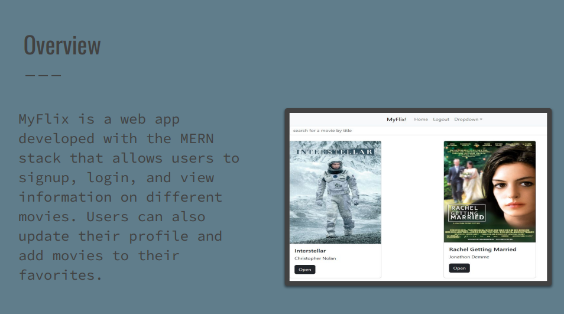

Case Study: MyFlix!
MyFlix is a web app developed with the MERN stack that allows users to signup, login, and view information on different movies. Users can also update their profile and add movies to their favorites.

Project Overview
MyFlix is a web app developed with the MERN stack that allows users to signup, login, and view information on different movies. Users can also update their profile and add movies to their favorites.
My Role
Created the front-end and back-end of the application using React, Node.js, Express, and MongoDB. I was responsible for designing the user interface, implementing the API endpoints, and ensuring the application was responsive and accessible.
Process
- Research & Planning
- Design & Prototyping
- Development
- Testing & Launch
Outcome
The MyFlix application was successfully launched and received positive feedback from users. It is a fully functional web app that allows users to easily browse movies, get additional information on titles and directors, and add them to their favorites. The application is also responsive and accessible, ensuring a great user experience across different devices.
Download Case Study